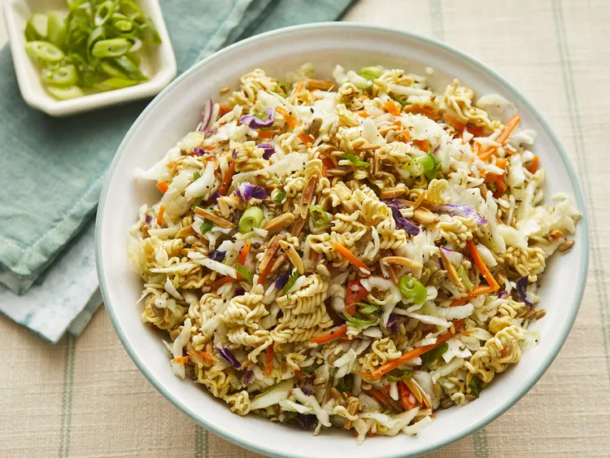

Top Ramen Salad

Description
A ramen noodle salad that is light and crunchy. It's excellent with BBQ chicken.
A family favorite recipe!
Ingredients
Salad:
- 2 (3 ounce) packages chicken-flavored ramen noodles, broken into pieces,
seasoning packets served
- 1/2 cup raw sunflower seeds
- 1/2 slivered almonds
- 1 (16 ounce package coleslaw mix)
- 3 green onions, chopped
Dressing:
- 1/2 cup olive oil
- 3 tablespoons white vinegar
- 1 tablespoon white sugar
- 1/2 teaspoon ground black pepper
Steps
- Preheat the oven to 350 degrees F (175 degrees C).
- Spread ramen noodles, sunflower seeds, and almonds onto a baking sheet.
- Bake noodle mixture in the preheated oven until fragrant and toasted, 10 to 15
minutes. Set aside to cool to room temperature.
- Combine coleslaw mix and green onions in a large bowl; Sprinkle cooled noodle
mixture over the top.
- Make dressing: Whisk olive oil, reserved ramen seasoning packets,vinegar, sugar,
and black pepper together in a bowl until smooth.
- Pour dressing over noodle mixture and toss to coat.